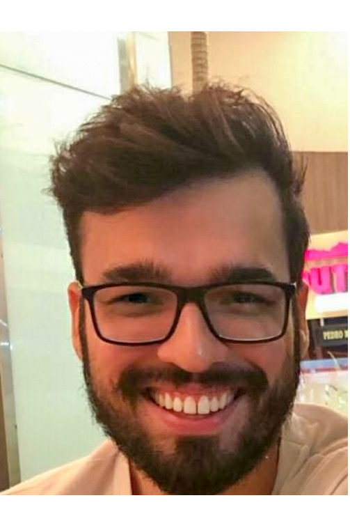

Daniel Gomes de Mello Farias
Engenheiro Eletricista
CV em PDF

Possui experiência em interoperabilidade e padrões de comunicação em saúde
(FHIR / Hl7), automação e controle, redes de sensores wireless, processamento de sinais e inteligência
artificial em isoladores de alta tensão, sinais cerebrais e radiação solar.
mestrado em Modelagem Computacional do Conhecimento
UFAL - Brasil (Jan 2018 — Jul 2020)
Orientador: Andre Luiz Aquino
Bolsa de pesquisa: CAPES
[Mestrado]
Estudei wavelet, entropia, parâmetros estatísticos e redes neurais profundas em séries temporais.
O objetivo era classificar os sinais cerebrais e prever a radiação solar.
Mestrado em Ciência e Tecnologia na Saúde
UEPB - Brasil (Maio 2018 — Dez 2020)
Orientador: Edmar Candeia Gurjão
[Mestrado]
Estudei sobre interoperabilidade e dois padrões em comunicações de saúde: HL7 e FHIR.
O objetivo foi comparar esses padrões, desenvolver um exemplo e avaliar suas características
(segurança, criptografia, privacidade, flexibilidade e confiabilidade).
Bacharel em Engenharia Elétrica
CESMAC - Brasil (Jan 2010 — Dez 2014)
Orientador: Sergio Carvalho
[Graduação]
Tive meu primeiro contato com pesquisa. Tive a oportunidade de estudar e participar de vários projetos,
comecei a escrever artigos e, no final, escrevi minha tese de graduação sobre redes de sensores sem fio e
Internet das Coisas (IoT), que era um projeto com o Arduino, um sistema solar painel e servidor em nuvem.
Desenvolvedor de Software Senior
SP - Brasil (Mar 2021 — Today)
Desenvolvedor de jogos de realidade virtual para saúde
Professor
AL - Brasil (May 2021 — Today)
- - Tecnólogo de Radiologia
- - Tecnólogo de Segurança do Trabalho
Pesquisador
AL - Brasil (Sep 2019 — May 2021)
- - Análise de documentos eletrônicos e fiscais para apuração de impostos
- - Previsão da Radiação Solar com Técnicas de Aprendizagem Profunda.
Professor Assistente
AL - Brasil (Jan 2019 — Jun 2019)
- - Ciência da Computação (Redes de Sensores sem Fio)
Professor
PB - Brasil (Aug 2020 — Oct 2020)
AL - Brasil (Dec 2016 — Feb 2017)
- - Instituto Federal da Paraíba (IFPB) -> Sistemas de Energias Renováveis
- - Instituto Federal da Alagoas (IFAL) -> Elétrica Automotiva
- - Instituto Federal da Alagoas (IFAL) -> Controlador Lógico Programável (CLP)
Iniciação Científica
AL - Brasil (Aug 2012 — Feb 2014)
- - Determinação do Estado Físico de Conservação de Isolantes pela Técnica de Radiofrequência.
- - Definição de critérios para a escolha de uma rede de sensores sem fio de baixo custo (RSSF)
- - Comparação entre Classificadores Wavelet para Verificação de Conservação de Isoladores de Vidro de Alta Tensão para Redes de 69 kV usando Rede Neural Artificial.
-
Voltage Regulation For Residential Prosumers Using a Set of Scalable Power Storage. In: Energies 2021. ISSN: 1996-1073.
DOI Link
-
The Technology Applied to the Inspection of the Architectural Heritage of Maceio Commercial Center - Alagoas. In: Rehabend 2018, Caceres, Spain. Euro – American Congress - Construction Pathology, Rehabilitation Technology and Heritage Management. ISBN: 978-84-697-7032-0.
Abstract
-
Application of Artificial Intelligence Techniques for the Classification of Wrist Movements in Time Series Generated by Electroencephalogram (EEG). In: V ERMAC - Regional Meeting of Applied and Computational Mathematics, 2018, Maceió, Brasil.
-
Buildings and Advertising on the Street of Commerce of the Historic Center in Maceió: a Reality... And does the Legislation Control It?. In: XI North Northeast Congress of Pesquisador and Innovation, 2016, Maceió, Brasil.
-
Heritage Education as a Tool in Combating the Irregularities of Advertising in Buildings at Street of Comércio / Maceió-AL. In: Academic Congress of Innovation and Technology – CAIITE, 2016, Maceió, Brasil.
-
Remote Monitoring of an Environment Using Wireless Sensor Networks. In: Academic Congress of Innovation and Technology – CAIITE, 2016, Maceió, Brasil.
-
Monitoring environments with difficult access using low cost wireless sensor networks. In: National Meeting of Electrical Engineering Students, 2015, Paulo Afonso, Brasil.
-
For an exploratory education. In: Congreso Ibero Latinoamericano De Ciencias, Innovacion Y Educacion Technology 2014. Buenos Aires - Argentina ISBN: 978-84-7666-210-6.
-
Practical Physics Class: Challenges and Possibilities. In: II International Symposium of Enseñanza de las Ciencias (SIEC 2014).
Idiomas
- Português (Fluente)
- Inglês (Intermediário)
- Espanhol (Básico)
Linguagens de Promação / Software
- Unity, (C#) (Fluente)
- HTML, CSS, JavaScript (Fluente)
- Python, Keras (Tensorflow) (Fluente)
Se você quiser iniciar uma conversa sobre algum dos meus interesses de pesquisa, envie-me uma mensagem!
Eu ficaria muito feliz em ajudar ou ser ajudado e começar uma colaboração!